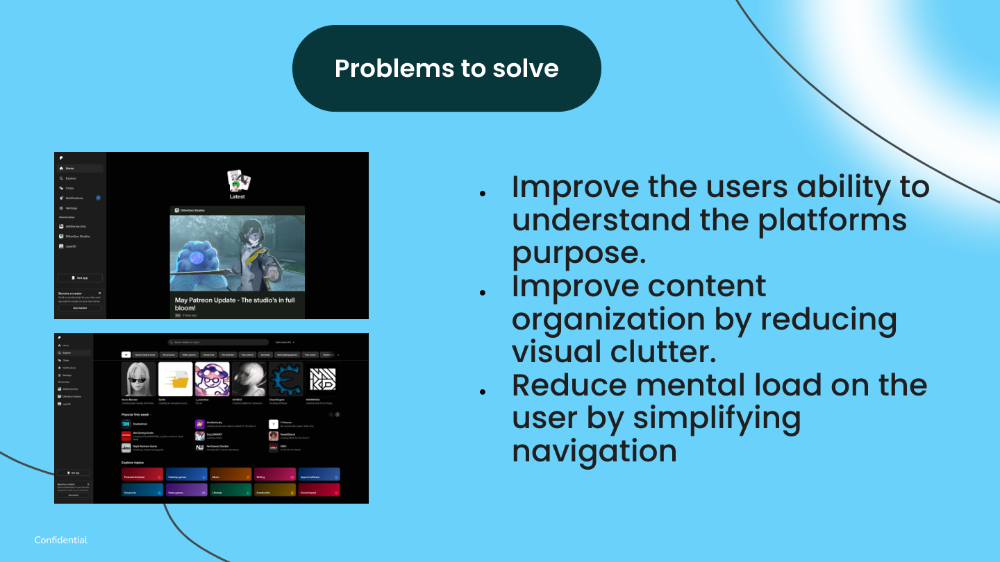
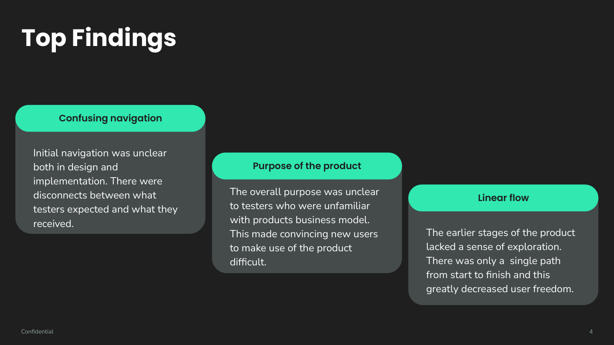
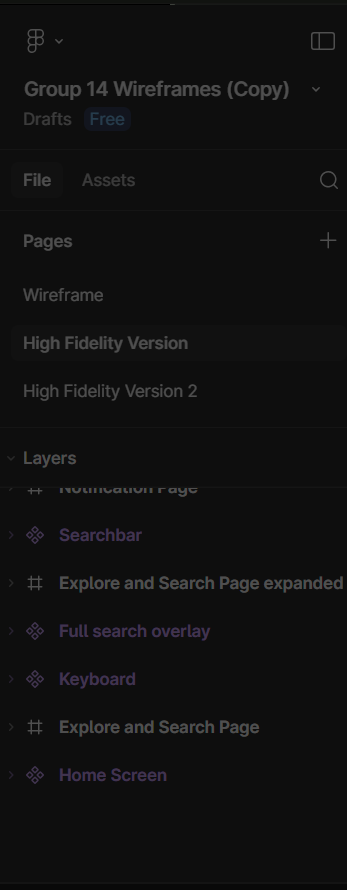
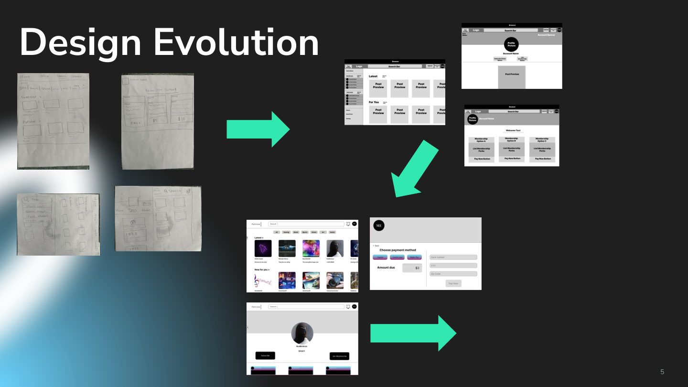
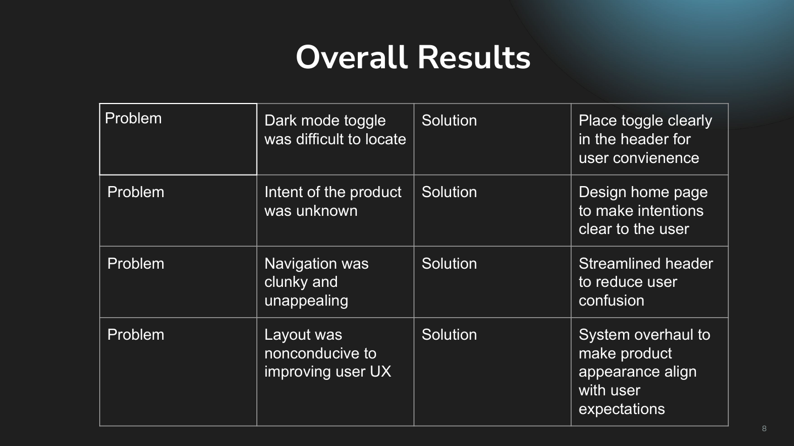
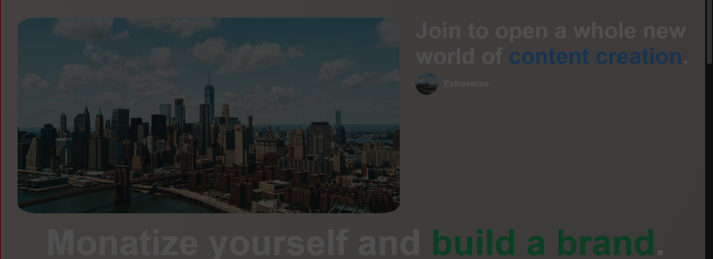
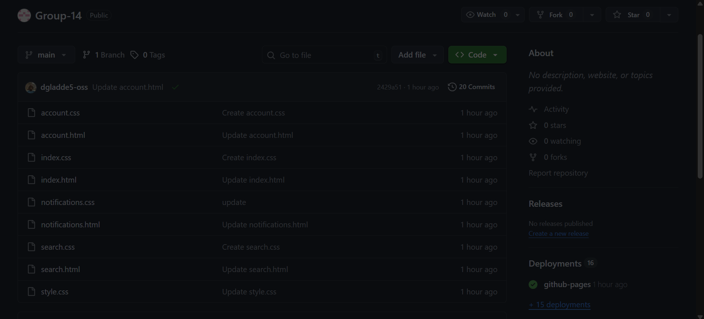
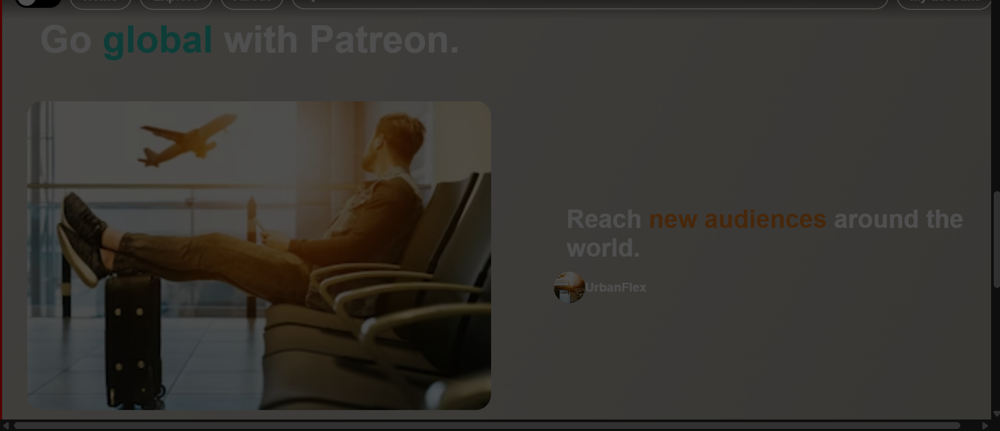
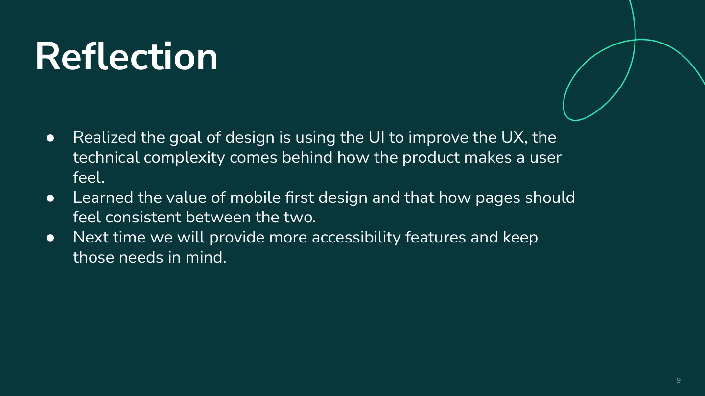

Patreon Website Redesign
This project started as a redesign problem, but the part I focused on most was making the front-end feel like a real product instead of a rough concept. My work centered on search behavior, page-to-page linking, top bar styling, overlays, and cleaning up parts of the interface that were not functioning or looking the way the team intended.
What was not working
The project was not just “make Patreon look better.” The bigger issue was that the earlier direction made it harder for users to understand what the platform was for, where to go next, and how to explore without feeling boxed into one path. That hurt both clarity and user confidence, especially for people who were not already familiar with the product model.

From the team presentation: the redesign targeted product clarity, reduced visual clutter, and simpler navigation.

The biggest themes from testing were confusing navigation, unclear product purpose, and a flow that felt too linear.
How the team learned what to fix
The presentation materials show that the team used follow up interviews, surveys and task based testing, and direct observation during use. The target group was college aged users who were familiar with social media platforms, which matched the kind of audience a content platform would need to reach.
Top three findings
- Navigation felt confusing. Users did not always get what they expected after clicking, and the structure felt unclear in both design and implementation.
- The product’s purpose was not obvious. New users had trouble understanding what the platform was for and why they should keep going.
- The early flow felt too linear. The experience did not leave enough room to explore, which made the product feel restrictive.
What I contributed
Because this is an individual portfolio, I wanted to be direct about the part of the work that was mine. This was a team project, but my contribution was in the implementation details that affected how the site actually behaved.
My main responsibilities
- Implemented the search bar behavior and worked through how the overlay and result links should function.
- Made sure buttons, links, and page to page navigation connected properly instead of breaking the user flow.
- Helped with top bar layout and styling so the navigation looked cleaner and felt more intentional.
- Adjusted overlays, including search behavior and notification behavior before that part changed.
- Polished pieces of the site that were not functioning or looking the way the team wanted.
Why I focused on these parts
The testing feedback made it pretty clear that the redesign could not rely only on new visuals. If people were already confused about purpose and navigation, then the site needed cleaner interaction patterns too. That made front end behavior just as important as the screens themselves.
How the redesign changed over time
One thing I wanted this case study to show is that the final version did not appear all at once. The project moved from rough wireframes to higher fidelity mockups, then to implementation, and then through a lot of smaller front end adjustments once the site was actually being used and tested.

Early planning in Figma included separate wireframe and high-fidelity stages, plus dedicated work on search and notification flows.

The slides documented a progression from paper sketches to digital mockups to coded pages.
Understand the weak points
The original direction left users unsure about purpose and navigation, so the project needed stronger visual hierarchy and easier movement between pages.
Refine the structure
As the screens became more detailed, the team simplified the header, made exploration easier, and tried to reduce the amount of clutter users had to process at once.
Make the interactions actually work
This is where most of my work came in. I focused on search behavior, working links, overlays, and the smaller UI adjustments that made the coded version closer to the intended design.
Polish what still felt off
Once the site existed as a real front end, some parts needed cleanup because they either looked off, behaved inconsistently, or did not match the creator/profile structure the team was aiming for.
What changed because of feedback
The presentation reflection and results slides helped connect the original findings to actual design choices. The redesign was not just based on preference. It responded directly to what users struggled with during testing.
Examples of feedback turning into changes
- The dark mode toggle was hard to locate, so the redesign moved it into the header where it was easier to find.
- The product intent was unclear, so the home page was redesigned to explain the platform more directly.
- The navigation felt clunky, so the header was streamlined to reduce confusion.
- The overall layout did not support the experience very well, so the system was overhauled to better match user expectations.

The results slide made the problem to solution relationship explicit, which is the same structure I wanted to preserve in this case study.
What the finished experience looks like
The final site is not perfect, but it is much clearer than the earlier direction. The home page does more to explain the platform, the creator pages are more consistent, and the interface gives users more to work with visually and functionally than the earlier linear flow.

Home page content was redesigned to communicate value faster and feel less like a single path experience.

The desktop account page shows the kind of front end polish work I kept coming back to, especially around overlay behavior and layout cleanup.

The payment flow helped make the final product feel more complete by covering a full user path instead of stopping at browsing.

The final coded version also made creator sections feel more distinct, with working profile links and more consistent profile imagery.
What I learned
The part of the project that went best for me was the search bar because it pushed me to learn something new without feeling completely lost. The hardest part was the home page because so many elements depended on each other. It forced me to think less like I was styling one isolated page and more like I was working on a system.
My main takeaways
- UI decisions matter most when they reduce confusion, not when they just add detail.
- Mobile first thinking matters because consistency between views affects how complete the experience feels.
- Front end cleanup is real design work, especially when it fixes the gap between intention and behavior.
- If I kept building this project, I would reduce hard coded content and make the structure easier to maintain.

The team reflection slide lined up with my own experience: the project reinforced how much the interface affects the overall user experience and how important consistency becomes once a site grows across multiple pages.